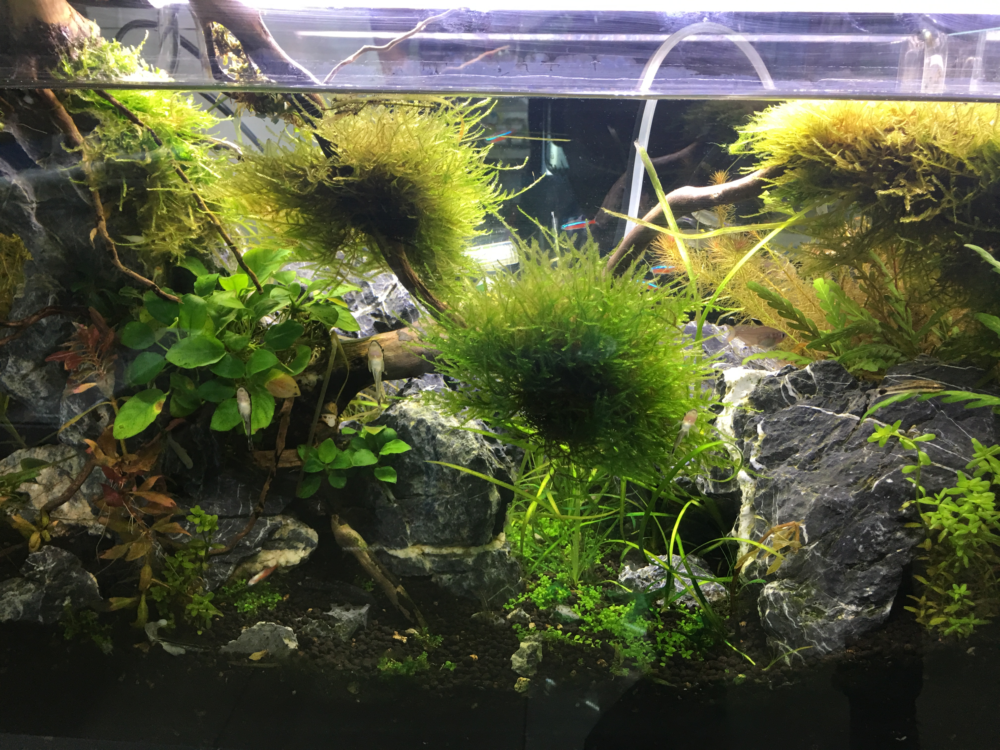
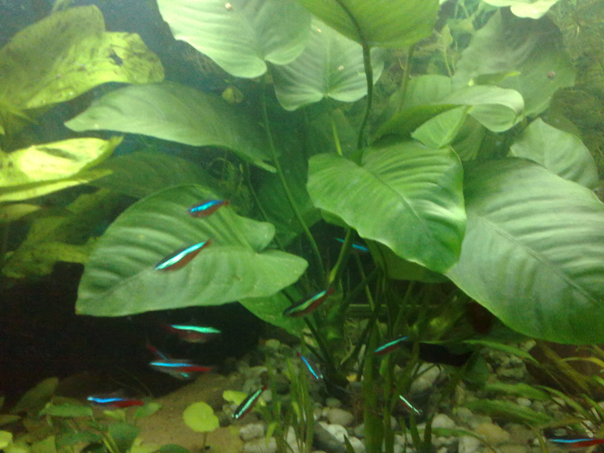
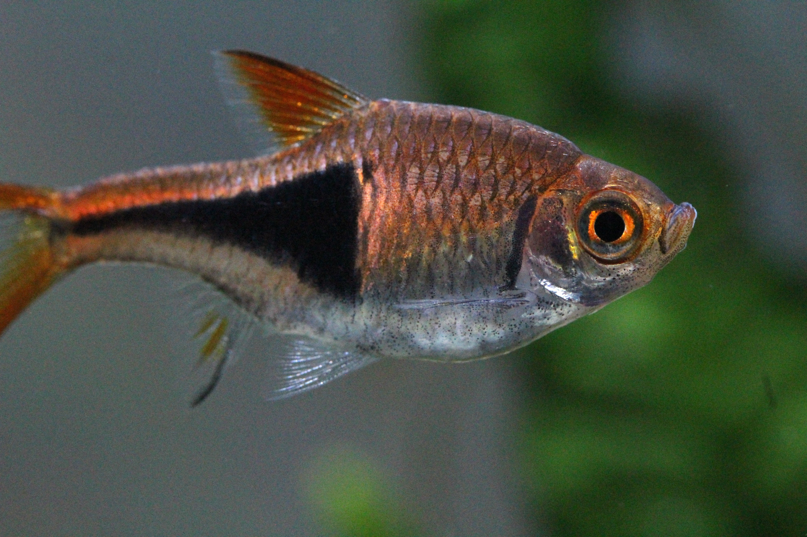

Sprzęt dobrany do litrażu
Filtr i grzałka powinny pracować stabilnie, zanim w akwarium pojawią się pierwsze ryby.



Filtr i grzałka powinny pracować stabilnie, zanim w akwarium pojawią się pierwsze ryby.
Żywe rośliny pomagają ustabilizować zbiornik i tworzą naturalne kryjówki.
Ryby wpuszczaj stopniowo, gdy filtr i parametry wody są już stabilne.